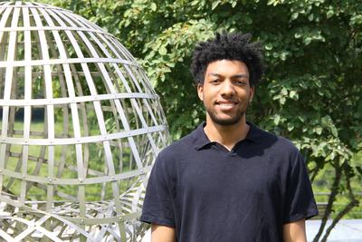

I am a Postdoctoral Researcher at Aarhus University (2025–2026), and an incoming NSF Postdoctoral Fellow at Massachusetts Institute of Technology (2026–2029).
I received my PhD in Mathematics from Princeton University (2020–2025), advised by Akshay Venkatesh. Before that, I completed an M.S. and B.S. in Mathematics at Carnegie Mellon University (2016–2020), and studied abroad at the Independent University of Moscow (2018).
My industry interests include deep learning, mechanistic interpretability, and time series forecasting. Relevant coursework includes Probability, Statistical and Machine Learning, Deep Learning, and Algorithms for Big Data.
Contact: trajanh (at) math.princeton (dot) edu.
News
- 05/2025 Invited talk: MIT PDE/Analysis Seminar (Cambridge, MA).
- 02/2025 Invited talk: Johns Hopkins Junior Number Theory Days (Baltimore, MD).
- 12/2024 Invited talk: Princeton/IAS Joint Number Theory Seminar (Princeton, NJ).
- 2023 NSF US Junior Oberwolfach Fellow.
- 2020 Princeton University President’s Fellowship.
- 2018 AMS Math in Moscow Scholarship.